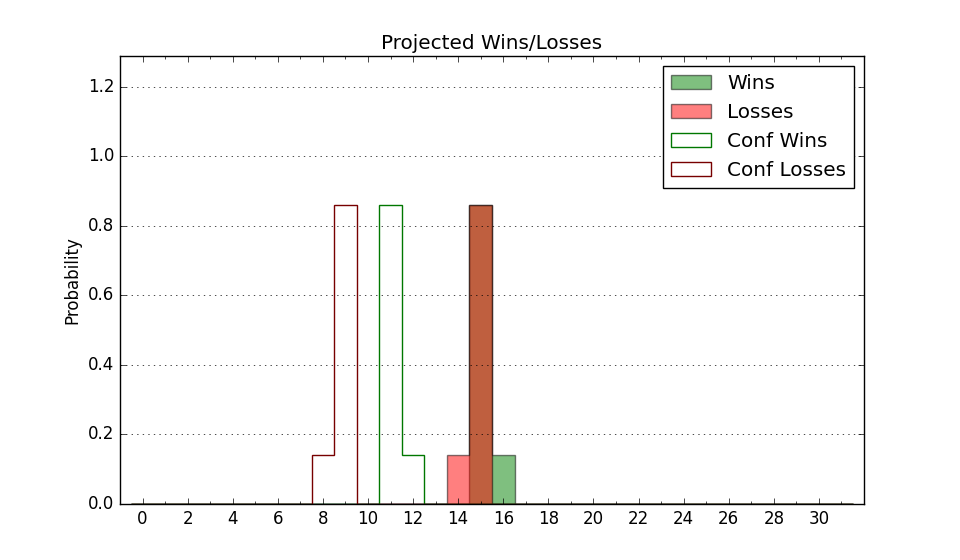

| Home | Game Probabilities | Conferences | Preseason Predictions | Odds Charts | NCAA Tournament |
| City: | Las Vegas, Nevada | |
| Conference: | Mountain West (5th)
| |
| Record: | 11-8 (Conf) 15-14 (Overall) | |
| Ratings: | Comp.: 6.3 (111th) Net: 6.3 (111th) Off: 115.7 (83rd) Def: 109.3 (168th) SoR: 0.0 (101st) |
| Remaining | ||||||
|---|---|---|---|---|---|---|
| Date | Opponent | Win Prob | Pred. | |||
| 3/6 | @ San Diego St. (46) | 14.6% | L 72-85 | |||
| Previous | Game Score | |||||
| Date | Opponent | Win Prob | Result | Off | Def | Net |
| 11/4 | Tennessee Martin (199) | 82.6% | L 81-86 | -12.8 | -5.5 | -18.3 |
| 11/8 | Chattanooga (285) | 91.8% | W 101-69 | 15.3 | -1.7 | 13.7 |
| 11/11 | Montana (185) | 80.0% | L 93-102 | 0.3 | -21.0 | -20.7 |
| 11/16 | @Memphis (134) | 41.6% | W 92-78 | 11.0 | 11.2 | 22.2 |
| 11/20 | Saint Joseph's (142) | 74.0% | W 99-85 | 14.6 | -5.2 | 9.4 |
| 11/24 | @Maryland (139) | 44.9% | L 67-74 | -19.1 | 11.0 | -8.2 |
| 11/25 | (N) Alabama (15) | 9.4% | L 76-115 | -9.5 | -15.7 | -25.2 |
| 11/27 | (N) Rutgers (143) | 60.7% | L 65-80 | -19.0 | -6.1 | -25.1 |
| 12/7 | @Stanford (62) | 19.3% | W 75-74 | -2.4 | 16.9 | 14.4 |
| 12/13 | Tennessee St. (204) | 83.4% | L 60-63 | -35.6 | 15.8 | -19.8 |
| 12/20 | Fresno St. (132) | 70.2% | W 84-72 | 10.8 | -0.1 | 10.7 |
| 1/3 | Air Force (341) | 96.5% | W 67-39 | -22.5 | 32.0 | 9.5 |
| 1/6 | @Wyoming (96) | 30.3% | L 66-98 | -13.7 | -16.7 | -30.3 |
| 1/9 | @Colorado St. (78) | 23.2% | L 62-70 | -15.9 | 12.3 | -3.5 |
| 1/13 | Boise St. (54) | 41.6% | W 89-85 | 2.5 | 10.8 | 13.3 |
| 1/17 | @San Jose St. (230) | 65.2% | W 76-62 | 13.3 | -1.2 | 12.0 |
| 1/20 | @Utah St. (29) | 8.6% | W 86-76 | 22.7 | 13.7 | 36.4 |
| 1/24 | San Diego St. (46) | 36.7% | L 71-82 | 0.3 | -9.9 | -9.6 |
| 1/27 | New Mexico (48) | 38.4% | L 61-89 | -26.8 | -5.3 | -32.1 |
| 1/30 | @Nevada (75) | 22.7% | L 76-89 | 6.0 | -15.4 | -9.5 |
| 2/3 | @Fresno St. (132) | 40.9% | L 96-98 | 14.7 | -15.9 | -1.2 |
| 2/7 | Grand Canyon (74) | 49.7% | W 80-78 | 6.2 | -1.6 | 4.6 |
| 2/10 | San Jose St. (230) | 86.4% | W 82-75 | -1.8 | -3.8 | -5.6 |
| 2/13 | @Boise St. (54) | 17.3% | W 86-83 | 17.0 | 0.4 | 17.4 |
| 2/18 | Colorado St. (78) | 50.7% | L 86-91 | 13.1 | -23.8 | -10.7 |
| 2/21 | @Air Force (341) | 89.1% | W 91-66 | 16.6 | 4.7 | 21.4 |
| 2/25 | @Grand Canyon (74) | 22.5% | L 67-80 | -6.0 | -6.2 | -12.2 |
| 2/28 | Nevada (75) | 49.9% | W 85-83 | 1.3 | 3.1 | 4.4 |
| 3/3 | Utah St. (29) | 24.2% | W 92-65 | 18.7 | 25.7 | 44.4 |
| Stats & Trends | |||||
|---|---|---|---|---|---|
| Current | Day | Week | Month | Season | |
| Composite | 6.3 | +0.0 | +1.7 | +3.1 | -0.8 |
| Comp Rank | 111 | -- | +19 | +25 | -26 |
| Net Efficiency | 6.3 | +0.0 | +1.7 | +3.3 | -- |
| Net Rank | 111 | -- | +19 | +29 | -- |
| Off Efficiency | 115.7 | +0.0 | +0.9 | +3.7 | -- |
| Off Rank | 83 | -- | +8 | +42 | -- |
| Def Efficiency | 109.3 | +0.0 | +0.9 | -0.4 | -- |
| Def Rank | 168 | +2 | +28 | +2 | -- |
| SoS Rank | 83 | -- | +3 | -16 | -- |
| Exp. Wins | 15.1 | -0.0 | +1.4 | +2.2 | -2.7 |
| Exp. Conf Wins | 11.1 | -0.0 | +1.4 | +2.2 | -0.3 |
| Conf Champ Prob | 0.0 | -- | -- | -- | -5.4 |

| Advanced Stats | ||
|---|---|---|
| Stat | Value | Rank |
| Off Eff FG % | 0.550 | 71 |
| Off Ast Ratio | 0.159 | 102 |
| Off ORB% | 0.333 | 91 |
| Off TO Rate | 0.141 | 139 |
| Off FT Ratio | 0.429 | 24 |
| Def Eff FG % | 0.510 | 163 |
| Def Ast Ratio | 0.146 | 173 |
| Def ORB% | 0.293 | 142 |
| Def TO Rate | 0.158 | 95 |
| Def FT Ratio | 0.442 | 335 |